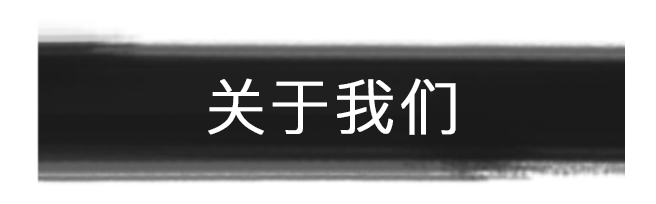

基金会概况
理事、监事名单
首页
/
关于我们
/
基金会概况
2018年1月，经成都市教育局同意，四川省民政厅批准登记注册四川师范大学教育基金会正式成立。 四川师范大学教育基金会依托于四川师范大学，承载着师大七十年风华与使命，以服务于师生，反哺 教育事业为动力，以师大情怀为链条，筹集每一笔捐赠款，聚合每一份仁义之举，坚守"24356"办学 思想体系，始终把培养国家优秀教师人才作为首要任务，把促进西部经济和社会发展、服务地区和国家 重大需求、传承创新巴蜀和中华文明作为义不容辞的责任，自觉肩负起振兴西部教育的时代使命，致力于 成为引领中国西部地区师范教育、教师教育、干部培训、师资培训等具有区域特色和社会责任的教育基金。
四川师范大学在教育基金会在此郑重承诺，严格按照基金会相关管理方法，管理好、用好教育基金，做到 制度完整、机构健全、信息公开、效益显著。理事长、理事会、秘书长各私其职，充分利用师大各类教育资源 ，发展壮大教育基金规模。教育基金会将认真负责地对待每一笔捐赠资金，严格履行捐赠协议，公开透明 地管理捐赠资金，不辜负每一份信任与支持。基金会将通过接受捐赠资金，设立人才培养、科学研究、校园 建设、文化创新、社会公益、专项基金等项目，奖励优秀的教师和学生，资助贫困的学生，扶弱济贫。助学扬善。
积源聚善，润泽苍生，励志扶困，育才强哥。我们热诚地期待并接受社会各界捐赠，为四川师范大学的建设和 发展、四川基础教育事业的振兴和繁荣、中国西部地区教育文化建设尽力出力。祈首相盼，一份仁爱反哺之情， 学生报以热情青春。四川师范大学基金会因您的慷慨而壮大，狮山梦因您的奉献而永恒。